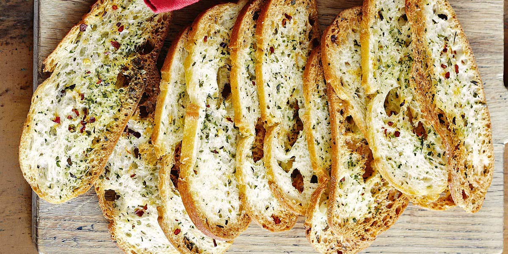

Garlic Bread
Recipe Specification
Ingredients List
| Ingredients | Quantity |
|---|---|
| Strong White Flour | 400g |
| Dried Yeast | 8g |
| Olive Oil | 40ml |
| Table Salt | 3 tsp |
| Unsalted Butter | 250g |
| Parsley | 50g |
| Garlic Cloves | 6 Cloves |
Yield: 1 loaf
Preparation
- Sift half the flour and half yeast into bowl and make a well.
- Add 150ml of lukewarm water.
- Mix flour into water until dough comes away from the side of the bowl.
- Apply Olive Oil to work surface and tip out dough before kneading for 7 minutes.
- Apply Oil to the surface of bowl and transfer dough to it before placing in a sealable loose polythene bag.
- Leave dough to prove and rise for 4-5 hours at room temperature until volume has doubled in size.
- Dissolve Salt in 150ml of lukewarm water.
- Remove dough, place in food mixer and add remaining flour, yeast, oil and 150ml of salt water.
- Mix on a medium speed for 7-8 minutes until dough becomes soft and loosely elastic.
- Remove flour from mixing bowl and place in a large oiled square plastic container. Place container in a loose sealable polyethene bag and prove for a further 1-2 hours or until dough has doubled in volume.
- Gently tip dough on to lightly floured rectangle of grease proof paper before applying a dusting of flour to the top of it.
- Carefully, using a sharp and floured knife, cut dough in half length ways, separate and elongate to create ciabatta shapes.
- Pre-heat Oven to 200’C
- Transfer greaseproof paper to baking tray as gently as possible before leaving to prove for a further 30 minutes.
- Place butter in microwave and warm for 30-45 seconds until butter is soft.
- Pick and finely chop Parsley leaves.
- Peel and crush Garlic cloves.
- Mix butter, parsley and garlic before season with salt.
Cooking Instructions
- Place Dough on middle shelf of the oven and bake for 30 minutes.
- Remove from the oven and tap the bottom of bread to hear for hollowness. If it sounds a little dense, then place in the oven for a further 5 minutes. If cooked, place on a wire rack to cool.
- Cut Ciabatta into 1 inch slices, spread garlic butter over one side before placing on baking tray and toasting in the oven foe 4 minutes.

Serving Suggestions
Garlic bread can act as an accompaniment to any authentic Italian food.
Storing instructions
Consume when made.